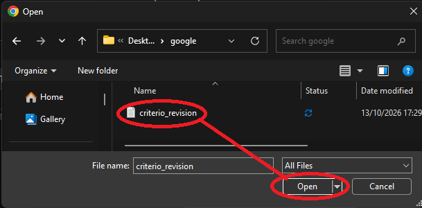
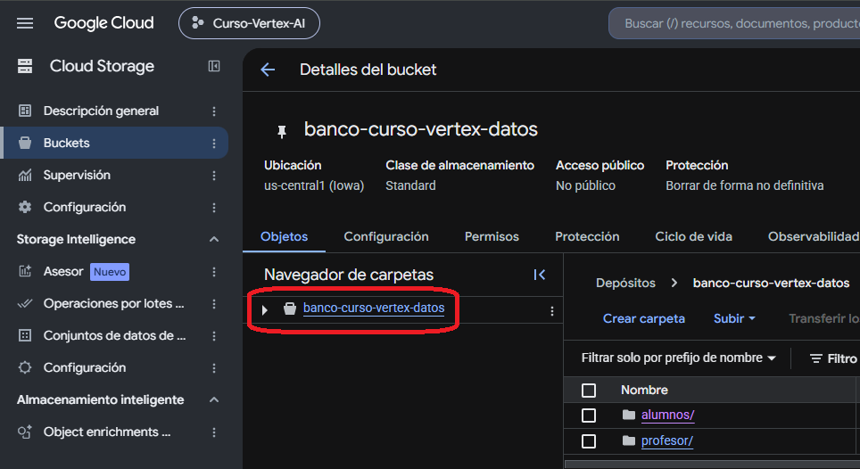

Cloud Storage — operaciones
Ahora pasamos de reconocer buckets y objetos a trabajar con ellos. La regla general es simple: antes de crear, mover o eliminar algo, confirma qué recurso estás modificando y si realmente tienes autorización para hacerlo.
1. Antes de modificar un recurso
En un entorno compartido, una acción correcta técnicamente puede ser incorrecta si se realiza sobre el recurso equivocado. Antes de modificar algo, revisa:
- ¿Estoy en el proyecto correcto?
- ¿Estoy dentro del bucket correcto?
- ¿El objeto es mío, de práctica o compartido?
- ¿La actividad realmente requiere modificarlo?
- ¿Tengo permiso para realizar la acción?
2. Crear un bucket
Crear un bucket es una operación administrativa que no siempre estará habilitada para todas las cuentas de alumno. Cuando la práctica lo permita, el flujo general en la consola es:
- Abre Cloud Storage → Buckets.
- Selecciona Crear / Create.
- Escribe un nombre globalmente único.
- Revisa el tipo de ubicación y la región.
- Revisa la clase de almacenamiento y opciones de protección.
- Antes de confirmar, vuelve a comprobar nombre y ubicación.
- Crea el bucket y abre sus detalles.
3. Crear una carpeta
En la consola de Cloud Storage puedes crear una carpeta vacía o subir una carpeta existente. En buckets con namespace plano, esa estructura visual normalmente se representa mediante prefijos en los nombres de los objetos.
- Abre el bucket.
- Selecciona Crear carpeta / Create folder.
- Escribe el nombre.
- Entra en la carpeta antes de subir los objetos que quieras organizar allí.
4. Subir archivos
Subir un archivo crea un objeto dentro del bucket. La consola permite hacerlo arrastrando archivos al panel principal o mediante Upload → Upload files.
- Abre el bucket y entra a la carpeta/prefijo de destino.
- Selecciona Subir archivos / Upload files.
- Elige el archivo local.
- Espera a que termine la carga.
- Comprueba que el objeto aparece en la ruta esperada.

5. Localizar e inspeccionar un objeto
Encontrar un archivo no es lo mismo que analizar su contenido. Esta operación sirve para responder “¿dónde está?” y “¿qué objeto es?”.
- Abre el bucket.
- Navega por la estructura visible o usa el filtro/buscador disponible.
- Selecciona el objeto.
- Revisa nombre, ruta, tamaño, tipo de contenido, clase de almacenamiento y fechas disponibles.
- Identifica su URI gs://.

6. Descargar un archivo
Descargar recupera una copia del objeto desde Cloud Storage hacia tu computador. El objeto original permanece en el bucket.
- Abre el bucket.
- Navega hasta el objeto.
- Usa el icono o acción Download / Descargar.
- Comprueba que el archivo quedó disponible localmente.
7. Copiar un objeto
Copiar crea un nuevo objeto a partir de uno existente. Es una forma segura de preparar una copia descartable antes de practicar cambios.
- Localiza el objeto.
- Abre el menú de acciones del objeto.
- Selecciona Copy / Copiar.
- Indica destino y nombre de la copia.
- Confirma y verifica que ambos objetos existan.
8. Mover o renombrar un objeto
Cloud Storage permite mover o renombrar objetos desde la consola. Según la operación y el tipo de namespace, una herramienta puede implementar el movimiento como una copia seguida de la eliminación del original, o utilizar una operación atómica disponible para determinados casos.
Renombrar
Cambia el nombre con el que se identifica el objeto dentro de su ubicación.
Mover
Cambia la ubicación lógica o el bucket de destino, según la operación disponible y tus permisos.
9. Eliminar un objeto
Eliminar retira un objeto del bucket. Cloud Storage puede disponer de mecanismos de protección como soft delete, pero eso no convierte la eliminación en una operación sin consecuencias.
- Confirma que el objeto es descartable.
- Selecciona únicamente el objeto que quieres eliminar.
- Usa Delete / Eliminar.
- Lee el diálogo de confirmación antes de aceptar.
- Comprueba que los archivos maestros permanecen intactos.
10. Lo que sí necesitas para la Prueba Tipo
No todas las operaciones anteriores serán necesarias en la evaluación. Para resolver la Prueba Tipo, las acciones de Storage realmente importantes son:
Localizar el PDF común
Ubicar criterio_revision_operaciones_digitales.pdf dentro de prueba-tipo/fuentes/.
Trabajar en tu carpeta
Utilizar únicamente prueba-tipo/alumnos/alumno-XX/ para tus propios archivos.
Subir el TXT
Guardar y subir criterio_revision.txt dentro de insumos/.
Revisar resultados
Comprobar que el agente creó consulta.sql, resultado.csv e informe_final.md.
- Google Cloud — Create a bucket
- Google Cloud — About Cloud Storage objects and simulated folders
- Google Cloud — Upload objects
- Google Cloud — Download objects
- Google Cloud — Copy, rename, and move objects
- Google Cloud — Delete objects
La secuencia de práctica se mantiene alineada con la Clase 2: crear, localizar, ajustar y eliminar recursos, trabajando con copias descartables y evitando modificar recursos compartidos.